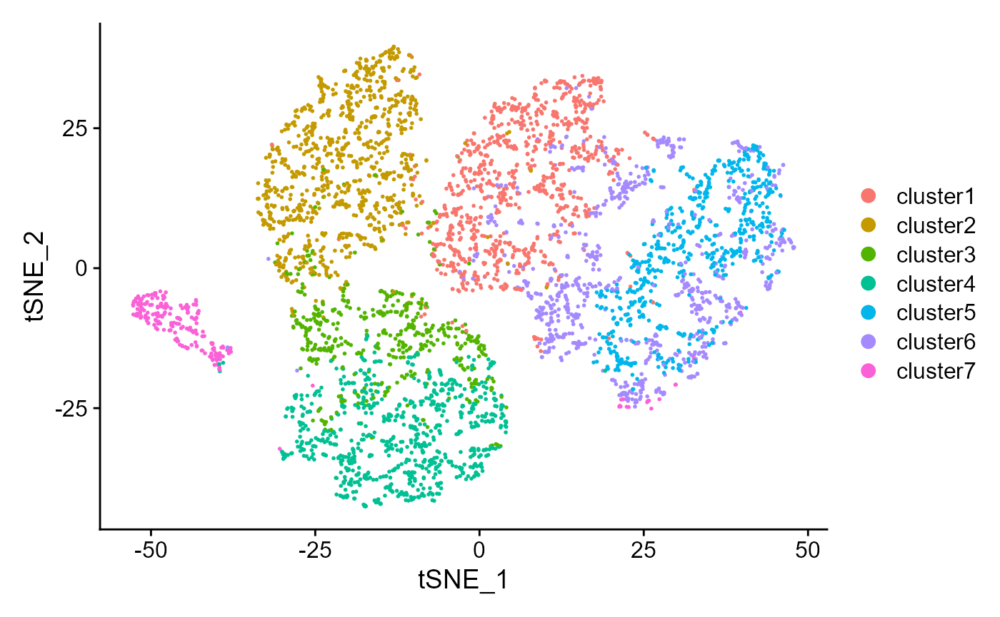
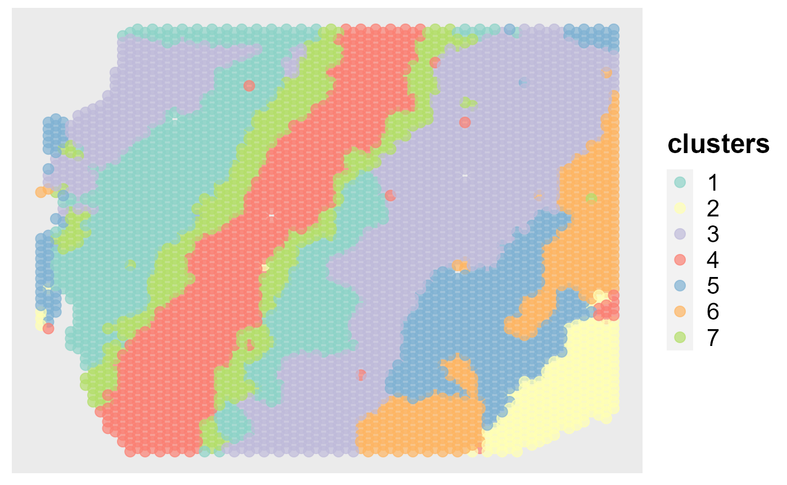
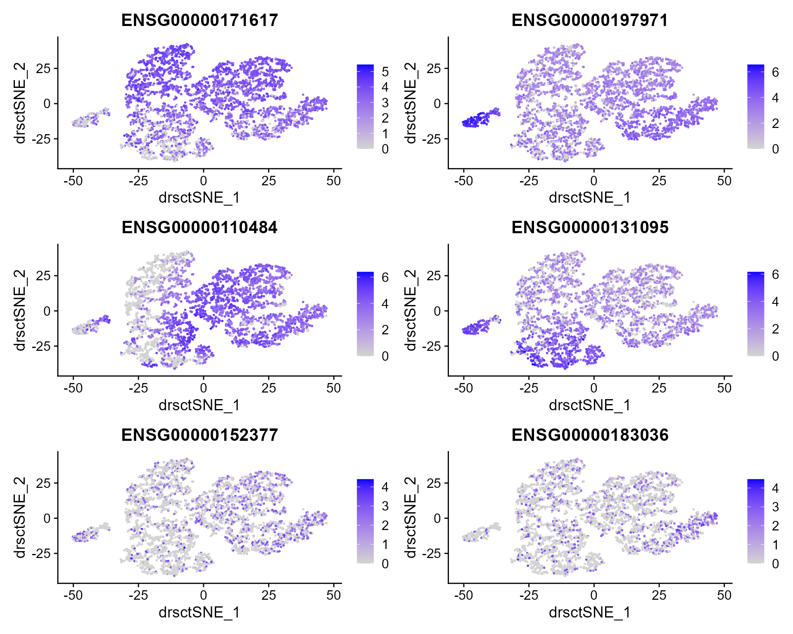
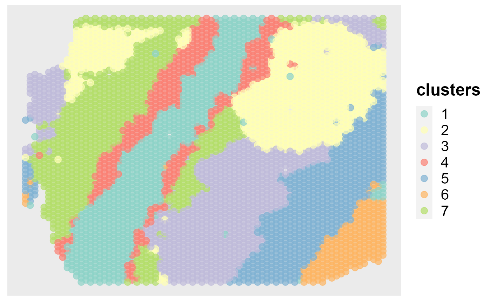

DR-SC: HCC1 Data Analysis
Wei Liu
2021-10-06
DR.SC.HCC1.RmdThe package can be loaded with the command:
library("DR.SC")
#> Loading required package: mclust
#> Package 'mclust' version 5.4.7
#> Type 'citation("mclust")' for citing this R package in publications.
#> Loading required package: Matrix
#> Loading required package: SingleCellExperiment
#> Loading required package: SummarizedExperiment
#> Loading required package: MatrixGenerics
#> Loading required package: matrixStats
#>
#> Attaching package: 'MatrixGenerics'
#> The following objects are masked from 'package:matrixStats':
#>
#> colAlls, colAnyNAs, colAnys, colAvgsPerRowSet, colCollapse,
#> colCounts, colCummaxs, colCummins, colCumprods, colCumsums,
#> colDiffs, colIQRDiffs, colIQRs, colLogSumExps, colMadDiffs,
#> colMads, colMaxs, colMeans2, colMedians, colMins, colOrderStats,
#> colProds, colQuantiles, colRanges, colRanks, colSdDiffs, colSds,
#> colSums2, colTabulates, colVarDiffs, colVars, colWeightedMads,
#> colWeightedMeans, colWeightedMedians, colWeightedSds,
#> colWeightedVars, rowAlls, rowAnyNAs, rowAnys, rowAvgsPerColSet,
#> rowCollapse, rowCounts, rowCummaxs, rowCummins, rowCumprods,
#> rowCumsums, rowDiffs, rowIQRDiffs, rowIQRs, rowLogSumExps,
#> rowMadDiffs, rowMads, rowMaxs, rowMeans2, rowMedians, rowMins,
#> rowOrderStats, rowProds, rowQuantiles, rowRanges, rowRanks,
#> rowSdDiffs, rowSds, rowSums2, rowTabulates, rowVarDiffs, rowVars,
#> rowWeightedMads, rowWeightedMeans, rowWeightedMedians,
#> rowWeightedSds, rowWeightedVars
#> Loading required package: GenomicRanges
#> Loading required package: stats4
#> Loading required package: BiocGenerics
#> Warning: package 'BiocGenerics' was built under R version 4.0.5
#> Loading required package: parallel
#>
#> Attaching package: 'BiocGenerics'
#> The following objects are masked from 'package:parallel':
#>
#> clusterApply, clusterApplyLB, clusterCall, clusterEvalQ,
#> clusterExport, clusterMap, parApply, parCapply, parLapply,
#> parLapplyLB, parRapply, parSapply, parSapplyLB
#> The following objects are masked from 'package:stats':
#>
#> IQR, mad, sd, var, xtabs
#> The following objects are masked from 'package:base':
#>
#> anyDuplicated, append, as.data.frame, basename, cbind, colnames,
#> dirname, do.call, duplicated, eval, evalq, Filter, Find, get, grep,
#> grepl, intersect, is.unsorted, lapply, Map, mapply, match, mget,
#> order, paste, pmax, pmax.int, pmin, pmin.int, Position, rank,
#> rbind, Reduce, rownames, sapply, setdiff, sort, table, tapply,
#> union, unique, unsplit, which.max, which.min
#> Loading required package: S4Vectors
#>
#> Attaching package: 'S4Vectors'
#> The following object is masked from 'package:Matrix':
#>
#> expand
#> The following object is masked from 'package:base':
#>
#> expand.grid
#> Loading required package: IRanges
#>
#> Attaching package: 'IRanges'
#> The following object is masked from 'package:grDevices':
#>
#> windows
#> Loading required package: GenomeInfoDb
#> Warning: package 'GenomeInfoDb' was built under R version 4.0.5
#> Loading required package: Biobase
#> Welcome to Bioconductor
#>
#> Vignettes contain introductory material; view with
#> 'browseVignettes()'. To cite Bioconductor, see
#> 'citation("Biobase")', and for packages 'citation("pkgname")'.
#>
#> Attaching package: 'Biobase'
#> The following object is masked from 'package:MatrixGenerics':
#>
#> rowMedians
#> The following objects are masked from 'package:matrixStats':
#>
#> anyMissing, rowMedians
#> Loading required package: MASS
#> Warning: package 'MASS' was built under R version 4.0.4
#> Loading required package: purrr
#>
#> Attaching package: 'purrr'
#> The following object is masked from 'package:GenomicRanges':
#>
#> reduce
#> The following object is masked from 'package:IRanges':
#>
#> reduce
#> The following object is masked from 'package:mclust':
#>
#> map
#> Loading required package: doSNOW
#> Warning: package 'doSNOW' was built under R version 4.0.5
#> Loading required package: foreach
#>
#> Attaching package: 'foreach'
#> The following objects are masked from 'package:purrr':
#>
#> accumulate, when
#> Loading required package: iterators
#> Loading required package: snow
#>
#> Attaching package: 'snow'
#> The following objects are masked from 'package:BiocGenerics':
#>
#> clusterApply, clusterApplyLB, clusterCall, clusterEvalQ,
#> clusterExport, clusterMap, clusterSplit, parApply, parCapply,
#> parLapply, parRapply, parSapply
#> The following objects are masked from 'package:parallel':
#>
#> clusterApply, clusterApplyLB, clusterCall, clusterEvalQ,
#> clusterExport, clusterMap, clusterSplit, makeCluster, parApply,
#> parCapply, parLapply, parRapply, parSapply, splitIndices,
#> stopCluster
#> Loading required package: Seurat
#> Attaching SeuratObject
#>
#> Attaching package: 'Seurat'
#> The following object is masked from 'package:SummarizedExperiment':
#>
#> Assays
#> Loading required package: RColorBrewer
#> Loading required package: ggplot2Fit DR-SC using real data CRC
load the data HCC1 in package DR.SC
data("HCC1", package = 'DR.SC')Data preprocessing
# standard log-normalization
HCC1 <- NormalizeData(HCC1)
# choose 2000 highly variable features
seu <- FindVariableFeatures(HCC1, nfeatures = 2000)Fit DR-SC model using 2000 highly variable features
We set the argument variable.type=‘HVGs’ (default option) to use the highly variable genes.
### Given K
seu <- DR.SC(seu, K=6, platform = 'Visium', variable.type = 'HVGs',verbose=F)
#> Neighbors were identified for 2982 out of 2983 spots.
#> Fit DR-SC model...
#> elasped time is : 165.89 11.43 179.86 NA NA
#> Finish DR-SC model fittingVisualization
spatialPlotClusters(seu)
Show the tSNE plot based on the extracted features from DR-SC.
drscPlot(seu)Show the UMAP plot based on the extracted features from DR-SC.
drscPlot(seu, visu.method = 'UMAP')
#> Warning: The default method for RunUMAP has changed from calling Python UMAP via reticulate to the R-native UWOT using the cosine metric
#> To use Python UMAP via reticulate, set umap.method to 'umap-learn' and metric to 'correlation'
#> This message will be shown once per session
#> Warning: Invalid name supplied, making object name syntactically valid. New
#> object name is RunUMAP.RNA.dr.sc; see ?make.names for more details on syntax
#> validity
Fit DR-SC model using 2000 spatially variable features
# choose 2000 spatially variable features
seus <- FindSVGs(seu, nfeatures = 2000)
#> Loading required package: SPARK
#> Find the spatially variables genes by SPARK-X...
#> ## ===== SPARK-X INPUT INFORMATION ====
#> ## number of total samples: 2983
#> ## number of total genes: 4000
#> ## Running with single core, may take some time
#> ## Testing With Projection Kernel
#> ## Testing With Gaussian Kernel 1
#> ## Testing With Gaussian Kernel 2
#> ## Testing With Gaussian Kernel 3
#> ## Testing With Gaussian Kernel 4
#> ## Testing With Gaussian Kernel 5
#> ## Testing With Cosine Kernel 1
#> ## Testing With Cosine Kernel 2
#> ## Testing With Cosine Kernel 3
#> ## Testing With Cosine Kernel 4
#> ## Testing With Cosine Kernel 5We set the argument variable.type=‘SVGs’ (default option) to use the spatially variable genes.
### Given K
seus <- DR.SC(seus, K=6, platform = 'Visium', variable.type='SVGs', verbose=T)
#> Neighbors were identified for 2982 out of 2983 spots.
#> Using SVGs to fit DR.SC model since variable.type=SVGs...
#> Fit DR-SC model...
#> -------------------Calculate inital values-------------
#> -------------------Finish computing inital values-------------
#> -------------------Starting EM algortihm-------------
#> -------------------Complete!-------------
#> elasped time is : 131.42 10.26 140.95 NA NA
#> Finish DR-SC model fittingVisualization
Show the spatial scatter plot for clusters
spatialPlotClusters(seus)Show the tSNE plot based on the extracted features from DR-SC.
drscPlot(seus) Show the UMAP plot based on the extracted features from DR-SC.
drscPlot(seus, visu.method = 'UMAP')
#> Warning: Invalid name supplied, making object name syntactically valid. New
#> object name is RunUMAP.RNA.dr.sc; see ?make.names for more details on syntax
#> validity
Ridge plots
Find the marker genes for each clusters
dat <- FindAllMarkers(seus)
#> Calculating cluster cluster1
#> Calculating cluster cluster2
#> Calculating cluster cluster3
#> Calculating cluster cluster4
#> Calculating cluster cluster5
#> Calculating cluster cluster6
head(dat)
#> p_val avg_log2FC pct.1 pct.2 p_val_adj cluster gene
#> TM4SF20 2.588275e-153 1.5800250 0.673 0.115 1.035310e-149 cluster1 TM4SF20
#> PTGDS 1.381409e-144 0.9845550 1.000 0.998 5.525635e-141 cluster1 PTGDS
#> FN1 1.007995e-124 0.6546525 1.000 1.000 4.031978e-121 cluster1 FN1
#> UGT2B4 3.644150e-102 0.8796851 1.000 0.988 1.457660e-98 cluster1 UGT2B4
#> GSTA2 9.755222e-101 1.2415775 0.997 0.843 3.902089e-97 cluster1 GSTA2
#> APOC1 5.291889e-99 0.3308163 1.000 1.000 2.116756e-95 cluster1 APOC1
library(dplyr, verbose=F)
#> Warning: package 'dplyr' was built under R version 4.0.4
#>
#> Attaching package: 'dplyr'
#> The following object is masked from 'package:MASS':
#>
#> select
#> The following object is masked from 'package:Biobase':
#>
#> combine
#> The following objects are masked from 'package:GenomicRanges':
#>
#> intersect, setdiff, union
#> The following object is masked from 'package:GenomeInfoDb':
#>
#> intersect
#> The following objects are masked from 'package:IRanges':
#>
#> collapse, desc, intersect, setdiff, slice, union
#> The following objects are masked from 'package:S4Vectors':
#>
#> first, intersect, rename, setdiff, setequal, union
#> The following objects are masked from 'package:BiocGenerics':
#>
#> combine, intersect, setdiff, union
#> The following object is masked from 'package:matrixStats':
#>
#> count
#> The following objects are masked from 'package:stats':
#>
#> filter, lag
#> The following objects are masked from 'package:base':
#>
#> intersect, setdiff, setequal, union
top2 <- dat %>%
group_by(cluster) %>%
top_n(n = 2, wt = avg_log2FC)
top2
#> Registered S3 method overwritten by 'cli':
#> method from
#> print.boxx spatstat.geom
#> # A tibble: 12 x 7
#> # Groups: cluster [6]
#> p_val avg_log2FC pct.1 pct.2 p_val_adj cluster gene
#> <dbl> <dbl> <dbl> <dbl> <dbl> <fct> <chr>
#> 1 2.59e-153 1.58 0.673 0.115 1.04e-149 cluster1 TM4SF20
#> 2 9.76e-101 1.24 0.997 0.843 3.90e- 97 cluster1 GSTA2
#> 3 9.14e-105 1.14 0.991 0.972 3.66e-101 cluster2 SPP1
#> 4 6.69e- 94 1.07 0.993 0.981 2.68e- 90 cluster2 LCN2
#> 5 1.27e-167 0.739 1 0.976 5.06e-164 cluster3 CYP3A7
#> 6 8.40e-113 0.712 0.983 0.86 3.36e-109 cluster3 SLC22A1
#> 7 1.09e-206 1.87 0.996 0.783 4.34e-203 cluster4 CPS1
#> 8 9.33e-115 1.16 0.915 0.479 3.73e-111 cluster4 TAT
#> 9 1.24e- 58 3.00 0.974 0.982 4.98e- 55 cluster5 IGKC
#> 10 5.62e- 33 2.78 0.868 0.845 2.25e- 29 cluster5 IGHG3
#> 11 3.34e-140 3.55 0.951 0.609 1.34e-136 cluster6 RBP4
#> 12 2.54e-102 2.64 0.912 0.581 1.02e- 98 cluster6 IGHA1Visualize single cell expression distributions in each cluster from Seruat.
genes <- top2$gene[seq(1, 12, by=2)]
RidgePlot(seus, features = genes, ncol = 2)
#> Picking joint bandwidth of 0.0391
#> Picking joint bandwidth of 0.184
#> Picking joint bandwidth of 0.138
#> Picking joint bandwidth of 0.219
#> Picking joint bandwidth of 0.223
#> Picking joint bandwidth of 0.235### Violin plot
Visualize single cell expression distributions in each cluster
VlnPlot(seus, features = genes, ncol=2)Feature plot
We extract tSNE based on the features from DR-SC and then visualize feature expression in the low-dimensional space
seus <- RunTSNE(seus, reduction="dr-sc", reduction.key='drsc_tSNE_')
#> Warning: Keys should be one or more alphanumeric characters followed by an
#> underscore, setting key from drsc_tSNE_ to drsctSNE_
#> Warning: All keys should be one or more alphanumeric characters followed by an
#> underscore '_', setting key to drsctSNE_
FeaturePlot(seus, features = genes, reduction = 'tsne' ,ncol=2)
Dot plots
The size of the dot corresponds to the percentage of cells expressing the feature in each cluster. The color represents the average expression level
DotPlot(seus, features = genes)
Heatmap plot
Single cell heatmap of feature expression
# standard scaling (no regression)
seus <- ScaleData(seus)
#> Centering and scaling data matrix
DoHeatmap(subset(seus, downsample = 500), features = genes, size = 5)
#> Warning: Invalid name supplied, making object name syntactically valid. New
#> object name is dr.sc; see ?make.names for more details on syntax validity
#> Warning: Cannot add objects with duplicate keys (offending key: DRSC_), setting
#> key to 'dr.sc_'
Fit DR-SC model using 2000 spatially variable features and using MBIC to determine clusters
# choose 2000 spatially variable features
seus <- FindSVGs(seu, nfeatures = 2000, verbose = F)
#> ## ===== SPARK-X INPUT INFORMATION ====
#> ## number of total samples: 2983
#> ## number of total genes: 4000
#> ## Running with single core, may take some time
#> ## Testing With Projection Kernel
#> ## Testing With Gaussian Kernel 1
#> ## Testing With Gaussian Kernel 2
#> ## Testing With Gaussian Kernel 3
#> ## Testing With Gaussian Kernel 4
#> ## Testing With Gaussian Kernel 5
#> ## Testing With Cosine Kernel 1
#> ## Testing With Cosine Kernel 2
#> ## Testing With Cosine Kernel 3
#> ## Testing With Cosine Kernel 4
#> ## Testing With Cosine Kernel 5We set the argument variable.type=‘SVGs’ (default option) to use the spatially variable genes.
### Given K
seus <- DR.SC(seus, K_set=3:8, platform = 'Visium', variable.type='SVGs', verbose=F)
#> Neighbors were identified for 2982 out of 2983 spots.
#> Using SVGs to fit DR.SC model since variable.type=SVGs...
#> Start chooing number of clusters...
#> The candidate set is: 3 4 5 6 7 8
#>
|
| | 0%
|
|============== | 20%
|
|============================ | 40%
|
|========================================== | 60%
|
|======================================================== | 80%
|
|======================================================================| 100%
#> The best number of cluster is: 5
#> Fit DR-SC model...
#> elasped time is : 234.59 14.13 250.32 NA NA
#> Finish DR-SC model fittingPlot the MBIC curve
mbicPlot(seus)Show the spatial scatter plot for clusters
spatialPlotClusters(seus)
Show the tSNE plot based on the extracted features from DR-SC.
drscPlot(seus, dims=1:10)
Session information
sessionInfo()
#> R version 4.0.3 (2020-10-10)
#> Platform: x86_64-w64-mingw32/x64 (64-bit)
#> Running under: Windows 10 x64 (build 19043)
#>
#> Matrix products: default
#>
#> locale:
#> [1] LC_COLLATE=Chinese (Simplified)_China.936
#> [2] LC_CTYPE=Chinese (Simplified)_China.936
#> [3] LC_MONETARY=Chinese (Simplified)_China.936
#> [4] LC_NUMERIC=C
#> [5] LC_TIME=Chinese (Simplified)_China.936
#>
#> attached base packages:
#> [1] parallel stats4 stats graphics grDevices utils datasets
#> [8] methods base
#>
#> other attached packages:
#> [1] dplyr_1.0.5 SPARK_1.1.1
#> [3] DR.SC_2.2 ggplot2_3.3.5
#> [5] RColorBrewer_1.1-2 SeuratObject_4.0.2
#> [7] Seurat_4.0.3 doSNOW_1.0.19
#> [9] snow_0.4-3 iterators_1.0.13
#> [11] foreach_1.5.1 purrr_0.3.4
#> [13] MASS_7.3-53.1 SingleCellExperiment_1.12.0
#> [15] SummarizedExperiment_1.20.0 Biobase_2.50.0
#> [17] GenomicRanges_1.42.0 GenomeInfoDb_1.26.7
#> [19] IRanges_2.24.1 S4Vectors_0.28.1
#> [21] BiocGenerics_0.36.1 MatrixGenerics_1.2.1
#> [23] matrixStats_0.58.0 Matrix_1.2-18
#> [25] mclust_5.4.7
#>
#> loaded via a namespace (and not attached):
#> [1] systemfonts_1.0.2 plyr_1.8.6 igraph_1.2.6
#> [4] lazyeval_0.2.2 splines_4.0.3 listenv_0.8.0
#> [7] scattermore_0.7 digest_0.6.27 htmltools_0.5.1.1
#> [10] fansi_0.5.0 magrittr_2.0.1 memoise_2.0.0
#> [13] doParallel_1.0.16 tensor_1.5 cluster_2.1.1
#> [16] ROCR_1.0-11 limma_3.46.0 globals_0.14.0
#> [19] pkgdown_1.6.1 spatstat.sparse_2.0-0 colorspace_2.0-0
#> [22] ggrepel_0.9.1 textshaping_0.3.5 xfun_0.22
#> [25] crayon_1.4.1 RCurl_1.98-1.2 jsonlite_1.7.2
#> [28] spatstat.data_2.1-0 survival_3.2-7 zoo_1.8-9
#> [31] glue_1.4.2 polyclip_1.10-0 gtable_0.3.0
#> [34] zlibbioc_1.36.0 XVector_0.30.0 leiden_0.3.7
#> [37] DelayedArray_0.16.0 future.apply_1.7.0 abind_1.4-5
#> [40] scales_1.1.1 DBI_1.1.1 miniUI_0.1.1.1
#> [43] Rcpp_1.0.7 viridisLite_0.4.0 xtable_1.8-4
#> [46] reticulate_1.18 spatstat.core_2.0-0 matlab_1.0.2
#> [49] htmlwidgets_1.5.3 httr_1.4.2 ellipsis_0.3.2
#> [52] ica_1.0-2 farver_2.1.0 pkgconfig_2.0.3
#> [55] sass_0.3.1 uwot_0.1.10 deldir_0.2-10
#> [58] utf8_1.2.1 labeling_0.4.2 tidyselect_1.1.1
#> [61] rlang_0.4.11 reshape2_1.4.4 later_1.1.0.1
#> [64] munsell_0.5.0 tools_4.0.3 cachem_1.0.4
#> [67] cli_3.0.1 generics_0.1.0 ggridges_0.5.3
#> [70] evaluate_0.14 stringr_1.4.0 fastmap_1.1.0
#> [73] yaml_2.2.1 ragg_1.1.3 goftest_1.2-2
#> [76] knitr_1.31 fs_1.5.0 fitdistrplus_1.1-3
#> [79] RANN_2.6.1 pbapply_1.4-3 future_1.21.0
#> [82] nlme_3.1-152 mime_0.10 pracma_2.3.3
#> [85] rstudioapi_0.13 compiler_4.0.3 plotly_4.9.3
#> [88] png_0.1-7 spatstat.utils_2.1-0 tibble_3.1.2
#> [91] bslib_0.2.4 stringi_1.7.3 highr_0.8
#> [94] RSpectra_0.16-0 desc_1.3.0 lattice_0.20-41
#> [97] vctrs_0.3.8 CompQuadForm_1.4.3 pillar_1.6.1
#> [100] lifecycle_1.0.0 spatstat.geom_2.0-1 lmtest_0.9-38
#> [103] jquerylib_0.1.3 RcppAnnoy_0.0.18 data.table_1.14.0
#> [106] cowplot_1.1.1 bitops_1.0-6 irlba_2.3.3
#> [109] httpuv_1.5.5 patchwork_1.1.1 R6_2.5.0
#> [112] promises_1.2.0.1 KernSmooth_2.23-18 gridExtra_2.3
#> [115] parallelly_1.23.0 codetools_0.2-18 assertthat_0.2.1
#> [118] rprojroot_2.0.2 withr_2.4.2 sctransform_0.3.2
#> [121] GenomeInfoDbData_1.2.4 mgcv_1.8-34 grid_4.0.3
#> [124] rpart_4.1-15 tidyr_1.1.3 rmarkdown_2.7
#> [127] Rtsne_0.15 shiny_1.6.0